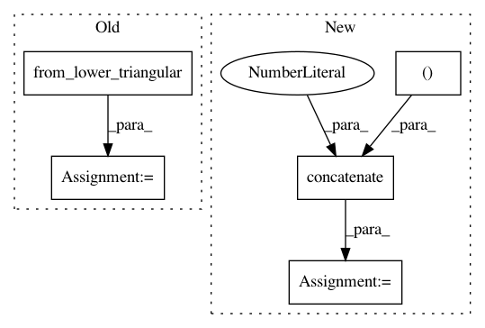

ed2b80836fb92142143d8b7702d5519761671cf5,dipy/reconst/dki.py,,_ols_iter,#Any#Any#Any#Any#,700
Before Change
log_s = np.log(sig)
result = np.dot(inv_design, log_s)
D=result[:6]
tensor = from_lower_triangular(D)
MD_square = ((tensor[0,0] + tensor[1,1] + tensor[2,2])/3.)**2
K_elements=result[6:21]/MD_square
return decompose_tensors(tensor, K_elements,
After Change
MD_square = (evals.mean(0))**2
KT_elements = result[6:21] / MD_square
dki_params = np.concatenate((evals, evecs[0], evecs[1], evecs[2],
KT_elements), axis=0)
return dki_params
In pattern: SUPERPATTERN
Frequency: 3
Non-data size: 5
Instances
Project Name: nipy/dipy
Commit Name: ed2b80836fb92142143d8b7702d5519761671cf5
Time: 2015-07-08
Author: rafaelnh21@gmail.com
File Name: dipy/reconst/dki.py
Class Name:
Method Name: _ols_iter
Project Name: nipy/dipy
Commit Name: acdb39c2f40fa90a033e895f09d8d02b02e85e9b
Time: 2016-08-29
Author: rafaelnh21@gmail.com
File Name: dipy/reconst/fwdti.py
Class Name:
Method Name: nlls_fit_tensor
Project Name: nipy/dipy
Commit Name: ede16d13e33e1fa0708e2547abee9a9c7dace1d1
Time: 2016-08-29
Author: rafaelnh21@gmail.com
File Name: dipy/reconst/fwdti.py
Class Name:
Method Name: nlls_fit_tensor